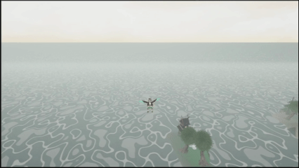
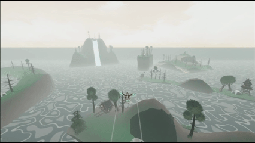

P.U.F.F.-N. — Proto Utility Flying Forager Navigator
Gameplay Programmer
P.U.F.F.-N. is a relaxing Unity exploration game where players pilot a puffin through a large island environment, collect fish, navigate speed rings, and develop mastery of physics-informed flight.
The project’s central design question was simple to describe and difficult to solve: how can flight feel expressive and believable without becoming difficult to pilot? I built the flight model and the systems around it to help players learn and enjoy the flying PUFF-N.
What I built
Bird flight model and flying components, including pitch, yaw, roll, acceleration, lift, drag, stall behavior, and player-focused stabilization.
Cinematic camera system with velocity look ahead and field of view, bounded orbit controls, and automatic recentering.
Ground detection, collision recovery, reset and respawn behavior, and crash feedback.
Water based movement, buoyancy, underwater transitions, and damping.
Polish: audio manager, speed-ring interaction effect application and animation, UI & UI programatic animations, illustrated cutscene orchestration, and player movement feedback.
The flight problem
The underlying flight model began with aerodynamic principles such as angle of attack, lift, drag, and stall behavior. Theoretically, this gave the bird movement a good starting point, as the player could build expectations about how the bird should move based on their previous experience of watching birds in flight.
However, during prototyping and the first playtests, it was obvious that aerodynamic realism did not automatically translate into understandable or controllable flight. Without artificial stabilization, the bird could continue rotating, drift through turns, or carry unwanted motion after the player had already changed inputs. Players described the result as fighting their own controls: the bird and camera could turn in a way that felt like it was pulling them back in the wrong direction. That made the flight difficult to pilot and made onboarding a new control scheme a significant problem.

Going to the original design goal for the project, the focus of the game was casual, relaxed exploration. This meant that mechanics should feel approachable and forgiving. The guiding question for adding flight stablization features was: "What does the player think should happen next, and what assistance helps the simulation respond to that intention?"
In response to playtest feedback, I added damping, camera-based yaw alignment, roll auto-leveling, high-speed yaw limits, velocity alignment, forgiving stall behaviors, and a forgiving recovery. These systems depart from strict aerodynamic behavior, but they make the player’s intent easier to express. They help the bird settle, turn in the expected direction, and stop influencing the motion once the correction is complete, which ultimately improves the playability of the flight. The artificial alignment was a deliberate trade: the simulation established believable motion, but the casual experience had priority when the two disagreed.
f

Flight implementation
I generally try to keep as much work as possible out of Unity's Update, FixedUpdate, and LateUpdate functions. Not every system needs to run every frame, and keeping those loops focused makes behavior easier to reason about. That said, I elected to keep the bird’s physics in FixedUpdate because the bird’s physics are central to gameplay, continuously active while the bird is being controlled, and need to be evaluated constantly.
The FixedUpdate of the bird controller below is therefore deliberately limited to the work that must participate in the bird’s active movement: input, air and water influence, steering, aerodynamic forces, recovery, and flap forces, all contained within their respective functions to ease future modifications.
That orchestration gives the individual systems a predictable place in the flight model. The following sections take a closer look at the major systems behind the bird’s flight, breaking them down into more granular functions and the decisions behind them.
The player-control layer translates input into torque, then uses damping, yaw coordination, roll leveling, and velocity alignment to translate those inputs into player expected behavior. We are compromising physical realism here for readability and player intent.
private void ApplySteering(float airInfluence) // Convert input into physical rotation.
{
float pitchControlMultiplier = IsGrounded() ? groundedPitchControlMultiplier : 1f;
float pitch = -moveInput.y * pitchTorque * pitchControlMultiplier;
float yaw = moveInput.x * yawTorque * GetYawAuthorityMultiplier();
float roll = rollInput * rollTorque;
rb.AddRelativeTorque(new Vector3(pitch, yaw, roll) * airInfluence, ForceMode.Acceleration);
ApplyAngularDamping(airInfluence); // Keep rotation from carrying past the player’s intent.
ApplyYawCoordination(airInfluence);
ApplyRollAutoLevel(airInfluence); // Gently Rolls the bird to level when there hasn’t been player input for a second.
}
Calculates lift from airspeed, wing area, angle of attack, and lift coefficient, then softens lift progressively beyond the stall angle and applies drag.
private void ApplyAerodynamics(float airInfluence)
{
if (airInfluence <= 0f) return; // No air means no aerodynamic forces to apply.
Vector3 velocity = rb.linearVelocity;
float currentAirspeed = velocity.magnitude;
float currentForwardAirspeed = GetForwardAirspeed();
float effectiveLiftAirspeed = GetEffectiveLiftAirspeed();
if (effectiveLiftAirspeed < minimumAirspeedForLift)
{
float lowSpeedStallAngleDegrees = GetPitchFromLevelDegrees();
float lowSpeedDragForce = ApplyDrag(velocity, zeroLiftDragCoefficient, airInfluence); // Preserve drag feedback even when lift cannot be generated.
UpdateStallState(Mathf.Abs(lowSpeedStallAngleDegrees), currentForwardAirspeed, effectiveLiftAirspeed);
UpdateTelemetry(lowSpeedStallAngleDegrees, currentAirspeed, currentForwardAirspeed, 0f, 0f, lowSpeedDragForce);
return;
}
Vector3 airflowDirection = -velocity.normalized;
float angleOfAttackDegrees = Vector3.SignedAngle(transform.forward, velocity.normalized, transform.right); // Turn orientation and airflow into a controllable lift input.
float angleOfAttackRadians = angleOfAttackDegrees * Mathf.Deg2Rad;
float liftCoefficient = Mathf.Clamp(liftSlope * angleOfAttackRadians, -maxLiftCoefficient, maxLiftCoefficient);
float absAngleOfAttack = Mathf.Abs(angleOfAttackDegrees);
UpdateStallState(absAngleOfAttack, currentForwardAirspeed, effectiveLiftAirspeed);
if (absAngleOfAttack > stallAngleDegrees)
{
float stallBlend = Mathf.InverseLerp(stallAngleDegrees, 90f, absAngleOfAttack);
liftCoefficient *= Mathf.Lerp(1f, stallLiftMultiplier, stallBlend); // Make stall loss gradual so the player can read and recover from it.
}
float liftForce = Mathf.Clamp(CalculateDynamicPressure(effectiveLiftAirspeed) * wingArea * liftCoefficient, -maxFlightForce, maxFlightForce) * airInfluence;
Vector3 liftDirection = Vector3.Cross(transform.right, airflowDirection).normalized;
rb.AddForce(liftDirection * liftForce, ForceMode.Force); // Apply the tunable result to the Rigidbody.
float dragCoefficient = zeroLiftDragCoefficient + inducedDragFactor * liftCoefficient * liftCoefficient;
float currentDragForce = ApplyDrag(velocity, dragCoefficient, airInfluence);
UpdateTelemetry(angleOfAttackDegrees, currentAirspeed, currentForwardAirspeed, liftCoefficient, liftForce, currentDragForce);
}
The camera is treated as part of the flight experience, not as a passive follow target. It anticipates velocity separately from heading so fast movement feels readable without taking manual orbit control away from the player.
private void LateUpdate() // Read the latest movement before positioning the camera.
{
float targetBlend = 1f - Mathf.Exp(-targetPositionSharpness * Time.deltaTime);
smoothedTargetPosition = Vector3.Lerp(smoothedTargetPosition, GetTargetPosition(), targetBlend); // Smooth position separately from orientation.
float lookAheadBlend = 1f - Mathf.Exp(-lookAheadSharpness * Time.deltaTime);
smoothedLookAhead = Vector3.Lerp(smoothedLookAhead, GetRawVelocityLookAhead(), lookAheadBlend); // Let anticipation lead motion without snapping the view.
UpdateSpeedFieldOfView();
if (!IsOrbitPaused()) // Manual orbit takes priority over automatic follow.
{
Vector3 flatForward = ignoreTargetRoll ? GetFlatForward(target) : target.forward;
float yawBlend = 1f - Mathf.Exp(-autoYawFollowSharpness * Time.deltaTime);
smoothedForward = Vector3.Slerp(smoothedForward, flatForward, yawBlend).normalized; // Follow heading smoothly so physics changes do not jerk the camera.
}
Vector3 desiredPosition = GetDesiredPosition(smoothedForward);
transform.position = Vector3.SmoothDamp(transform.position, desiredPosition, ref positionVelocity, positionSmoothTime);
}
Manual look and recentering
Vector2 lookInput = inputReader != null ? inputReader.LookInput : Vector2.zero;
if (lookInput.sqrMagnitude > manualLookDeadZone * manualLookDeadZone) // Ignore stick noise before it can move the camera.
{
yawOffsetDegrees += lookInput.x * manualYawSpeed * Time.deltaTime;
pitchOffsetDegrees -= lookInput.y * manualPitchSpeed * Time.deltaTime;
recenterDelayTimer = autoRecenterDelay; // Respect active player attention before recentering.
}
else
{
recenterDelayTimer = Mathf.Max(0f, recenterDelayTimer - Time.deltaTime);
if (recenterDelayTimer <= 0f)
{
yawOffsetDegrees = Mathf.MoveTowards(yawOffsetDegrees, 0f, autoRecenterSpeed * Time.deltaTime);
pitchOffsetDegrees = Mathf.MoveTowards(pitchOffsetDegrees, 0f, autoRecenterSpeed * Time.deltaTime); // Return gradually so the camera never wrestles control away.
}
}
}
Stall state and pitch response are still derived from the flight conditions, including angle of attack and airspeed. This recovery torque is applied only after the bird has entered a stall giving the player a more controllable path out of the stalled attitude.
private void ApplyStallRecoveryTorque() // Apply a bounded attitude correction after the bird stalls.
{
if (waterProbe.IsInWater || !isStalled || IsGrounded() || Mathf.Approximately(stallRecoveryTorque, 0f)) return; // Let the aerodynamic stall state determine when this runs.
stallRecoveryTorqueAxis = GetStallRecoveryTorqueAxis(); // Choose the torque axis from the bird’s current stalled attitude.
if (stallRecoveryTorqueAxis.sqrMagnitude < 0.0001f) return;
rb.AddTorque(stallRecoveryTorqueAxis * stallRecoveryTorque, ForceMode.Acceleration);
}
Ground recovery
if (waterProbe.IsInWater || !isGroundRecoveryActive || !IsGrounded()) return; // Ground recovery should not compete with flight or water movement.
Vector3 targetForward = (groundRecoveryDirection + Vector3.up * Mathf.Tan(recoveryPitchDegrees * Mathf.Deg2Rad)).normalized; // Choose a readable climb angle instead of forcing an instant snap.
Quaternion targetRotation = Quaternion.LookRotation(targetForward, Vector3.up);
Quaternion rotationDelta = targetRotation * Quaternion.Inverse(rb.rotation);
rotationDelta.ToAngleAxis(out float angleDegrees, out Vector3 torqueAxis);
rb.AddTorque(torqueAxis.normalized * angleDegrees * Mathf.Deg2Rad * recoveryTorque, ForceMode.Acceleration); // Use physics forces so recovery still feels continuous.
rb.AddForce(Vector3.up * recoveryLiftForce, ForceMode.Acceleration);
rb.AddForce(groundRecoveryDirection * recoveryForwardForce, ForceMode.Acceleration);
Uses the authored recovery direction and target pitch to give the player a reliable way out of a grounded collision.
A tunable arcade flight model using angle of attack, lift, stall softening, and induced drag. The system derives lift from the bird’s orientation and velocity, then progressively softens lift beyond the stall angle instead of switching it off abruptly.
The raw rigidbody could rotate faster than its velocity direction, making the bird slide through turns. This correction preserves horizontal speed while gradually redirecting movement toward the bird’s heading.
The camera smooths velocity look-ahead separately from heading follow, allowing it to anticipate fast movement without making the player’s manual orbit feel disconnected.
After testing showed that players ignored controls information in the pause menu, I changed the tutorial to wait for the action being taught. Each step remains visible long enough to read and then waits for the configured input.
Aerodynamic lift, stall, and dragBirdManager.cs · ApplyAerodynamicForces · lines 672–699A tunable arcade flight model using angle of attack, lift, stall softening, and induced drag.
The system derives lift from the bird’s orientation and velocity, then progressively softens lift beyond the stall angle instead of switching it off abruptly. That keeps the model grounded in aerodynamic concepts while leaving room for player-facing tuning.
Reducing rigidbody sideslipBirdManager.cs · ApplyVelocityForwardAlignment · lines 590–613A player-feel correction that preserves speed while gradually redirecting horizontal velocity toward the bird’s heading.
The raw rigidbody could rotate faster than its velocity direction, making the bird slide through turns. This correction preserves horizontal speed but makes high-speed steering more readable.
Velocity-aware flight cameraBirdCameraManager.cs · LateUpdate · lines 139–172Layered smoothing for velocity anticipation, heading follow, manual orbit, position, and rotation.
The camera updates after physics-driven bird movement, smooths velocity look-ahead separately from heading follow, and uses frame-rate-independent exponential blend factors to keep the response consistent.
Action-gated tutorial progressionTutorialManager.cs · ShowAndWaitForStep · lines 107–126A data-driven tutorial step that waits for both a minimum display time and the player’s configured input.
After testing showed that players ignored controls information in the pause menu, I changed the tutorial to wait for the action being taught. Each step subscribes to its input, waits for the prompt to be visible, and cleans up before the next step.